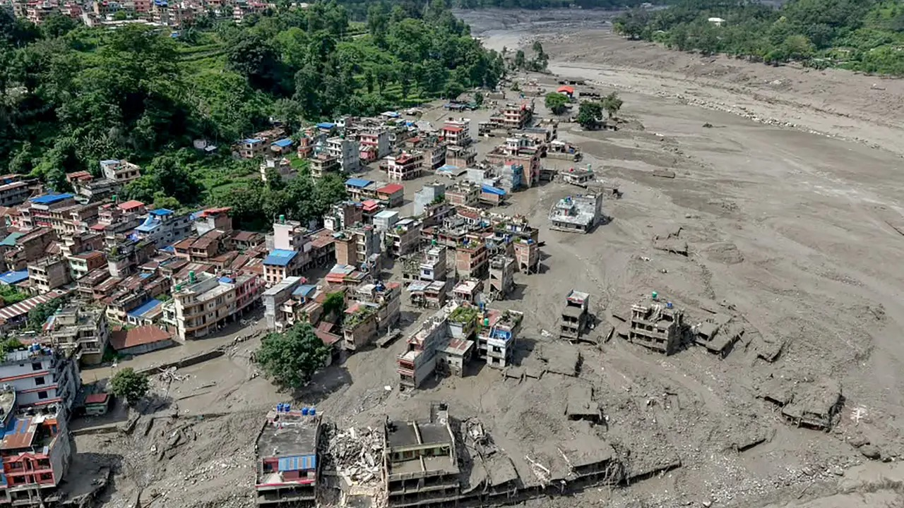
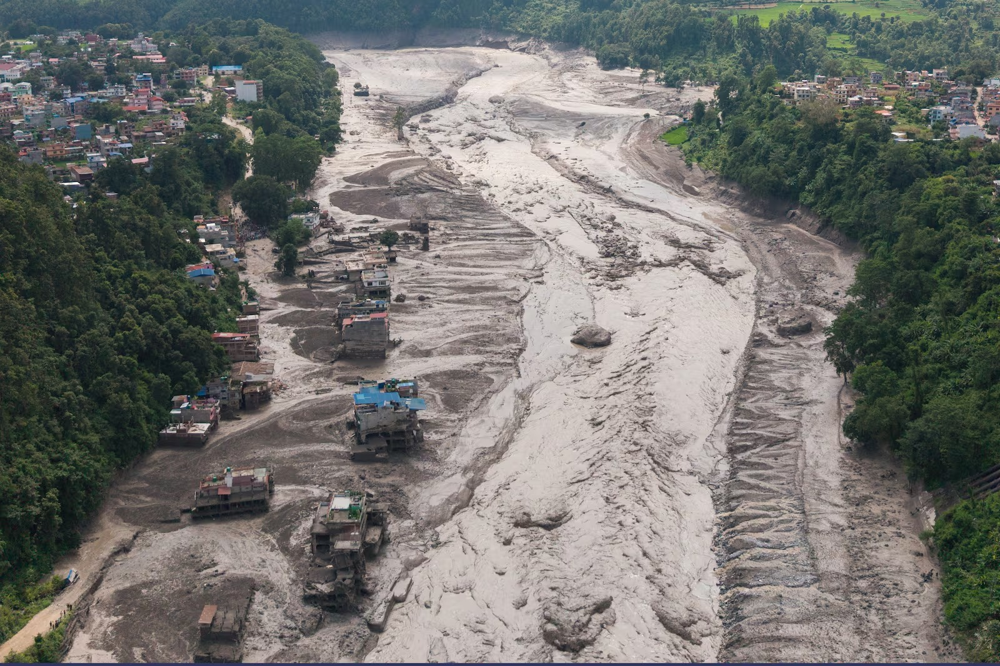
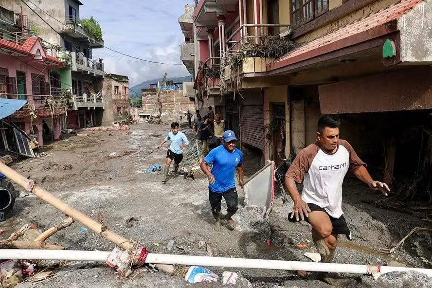

A Terra Secou as Lágrimas, Mas Não a Fome de Recomeçar
O Nepal, berço de paisagens majestosas e de um povo de fé inabalável, enfrenta um dos momentos mais sombrios de sua história recente. As chuvas devastadoras desencadearam deslizamentos de terra avassaladores, transformando vilarejos inteiros em escombros e lama em questão de minutos.

Por trás das estatísticas frias de desastre natural, existem histórias interrompidas: mães que perderam seus lares, crianças que aguardam por comida sob o frio da montanha e famílias inteiras que viram tudo o que construíram ser engolido pela terra. O som do vento nas cordilheiras agora carrega o eco de um pedido de socorro.
O Cenário Atual no Nepal
- Milhares de desabrigados: Famílias vivendo em acampamentos improvisados sem acesso a água potável.
- Risco de epidemias: Falta de saneamento básico e medicamentos para feridos e crianças.
- Isolamento total: Vilarejos nas montanhas estão incomunicáveis, dependendo inteiramente de missões de resgate e suprimentos emergenciais.
Como a Sua Generosidade Transforma o Lamaçal em Vida
Quando a terra se move com violência, o tempo torna-se o maior inimigo da sobrevivência. As primeiras horas e dias são cruciais para fornecer o básico: um teto provisório, um prato de comida quente, um cobertor para afastar o frio da altitude e atendimento médico imediato.


Você não pode parar a chuva ou conter a força da natureza, mas tem o poder exato de decidir o que acontece depois. Cada contribuição enviada através desta vaquinha online transforma-se diretamente em kits de sobrevivência, purificadores de água, remédios e reconstrução de vidas no Nepal.
Não estamos pedindo apenas uma doação; estamos convidando você a ser a mão estendida que resgata alguém do silêncio da lama. Nenhum valor é pequeno quando o objetivo é devolver a dignidade a um ser humano.